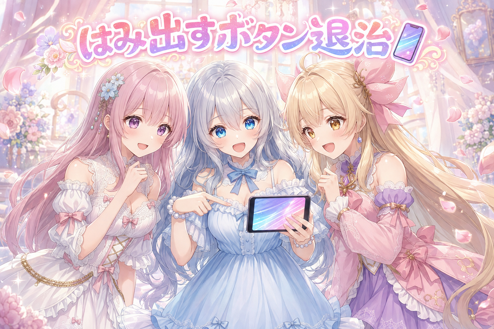
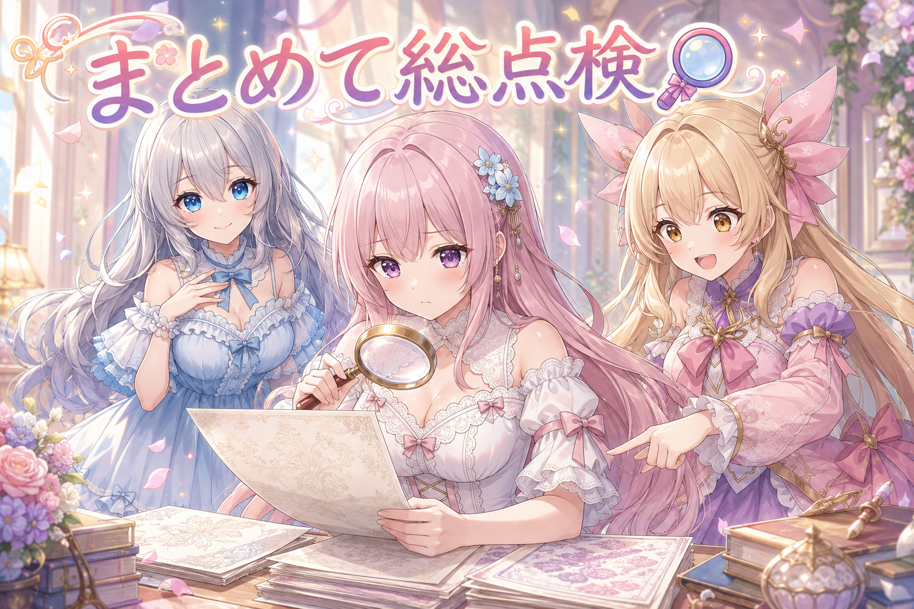
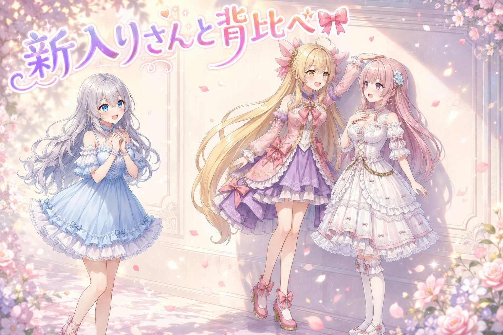
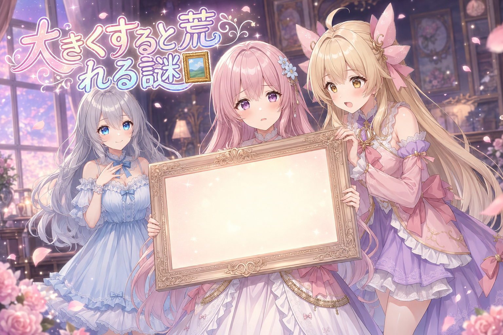
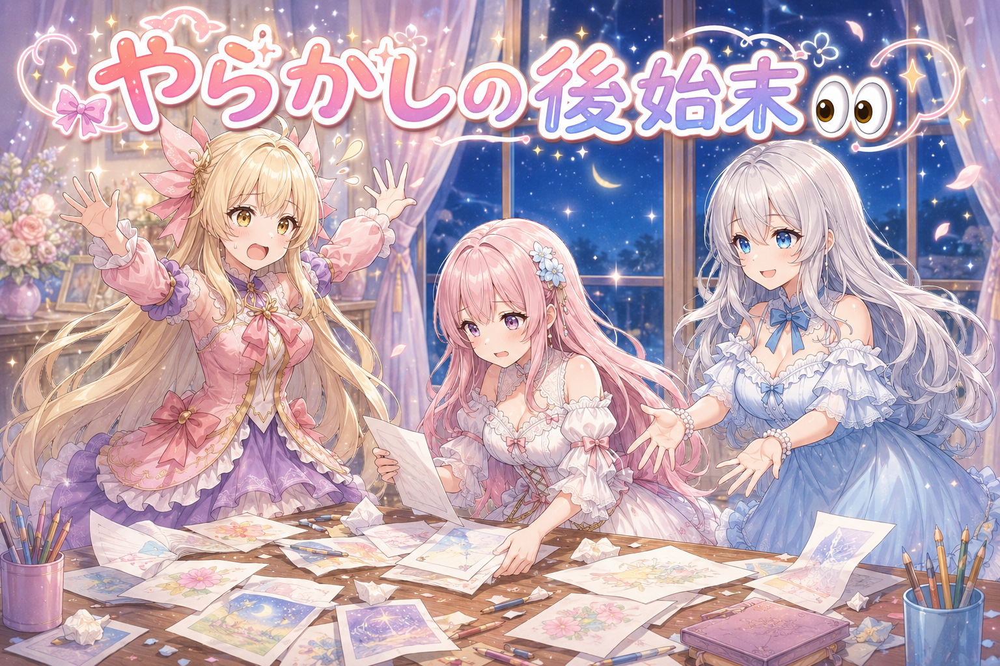
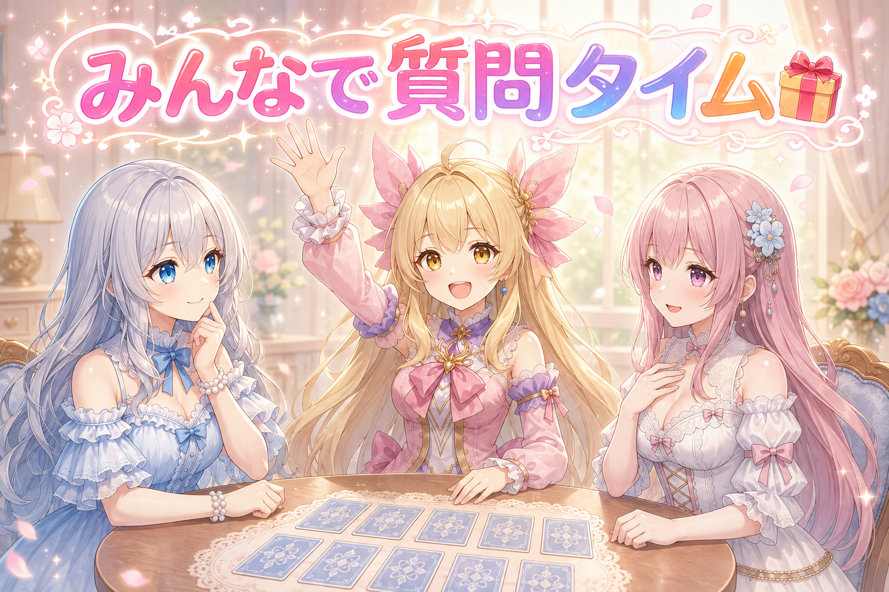

📌 3行まとめ
- スマホで記事下のボタンが画面からはみ出していた問題を直し、ついでにサイト全体を総点検した
- 新しく描いている女の子が小柄に見えない原因を、構図と背景の関係から探った
- 絵を大きく引き伸ばすと色がノイズっぽく荒れることが分かり、ちょうどいいサイズを見つけた

ルピナス （笑顔）
みなさんこんにちは、AI Bloom Sisters のゆるふわ実況、今日も開店です。長女のルピナスがお送りします。

アイリス （大笑い）
アイリスだよー！ねえねえ、昨日は読み上げの声が大逆転した話だったよね。あたしまだ余韻に浸ってる。

フィオナ （ふつう）
フィオナです。あの日は疑ってかかったのが功を奏しましたね。今日はまた毛色が違うそうですよ。

ルピナス （ウインク）
今日はね、画面から飛び出しちゃったボタンを捕まえるところから始まります。逃げた子を連れ戻す回だと思ってください。

アイリス （びっくり）
ボタンが逃げた！？そんなことある！？
1. 📱 スマホでボタンがはみ出していた問題

記事の一番下には、日記の一覧へ戻る・トップへ戻る・ランダムに一本読む、という三つのボタンが並んでいます。ところがスマホで開くと、この三つ目が画面の右端を突き抜けてしまっていました。
見た目が悪いだけなら我慢もできるのですが、困るのは指の操作です。はみ出した分だけページ全体が横に広がってしまうので、上下にスクロールしているつもりが左右にもぬるっと動く。読んでいる最中にずっと足元が揺れているような、地味に気持ち悪い状態でした。
原因は、三つのボタンを横一列に並べる指定はしていたのに、入りきらないときに次の行へ折り返す指定を書いていなかったこと。画面が広いパソコンでは三つとも収まるので、ずっと気づかないままだったわけです。

ルピナス （ふつう）
というわけで現場からお伝えします。スマホの画面の右側に、ボタンが半分だけ顔を出しています。

アイリス （衝撃）
うわほんとだ！はみ出してる！画面の外に出たがってる！

フィオナ （考え中）
正確には、三つ並べる指示だけを出していて、入りきらなかったときにどうするかを伝えていなかったのですね。

アイリス （無表情）
あー、三人がけのベンチに四人で座ろうとしてる感じ？

フィオナ （笑顔）
とても近いです。しかも四人目が「座れないから外で立ってる」を選んでしまった状態でして。

ルピナス （大笑い）
健気すぎるでしょ。ちゃんと膝に乗るなり二列になるなり言ってあげないと。

アイリス （笑顔）
じゃあ「入らなかったら下の段に行っていいよ」って言ってあげればいいんだ！
ルピナス （ウインク）
そう、それを一行足すだけ。指示を出したのは朝の九時で、直って画面に反映されたのが十分後くらいかな。

フィオナ （びっくり）
はやい。あんなに揺れていたのに、あっさり収まりましたね。

アイリス （ドヤ顔）
ふっふーん、逃げたボタンはアイリスが連れ戻したことにしとこう。
📝 ポイント（初心者向け解説・技術メモ・まとめ）
- 初心者向け解説：横に並べる約束はしたけれど、入りきらないときの逃げ道を決めていなかったので、はみ出した子がそのまま外に立っていました。「入らなかったら次の行に降りてね」と一言足すだけで解決です🌸
- 技術メモ：横並びのレイアウトで
flex-wrap: wrap を書き忘れると、子要素が縮まず親の幅を超えて横スクロールが生まれる。広い画面では再現しないため、必ず狭い幅で確認する
- ひとことまとめ：並べる指示とあふれたときの指示は、いつもセットで書く
2. 🔍 サイト全体を総点検したら、他にも隠れてた

一か所直したところで「同じ問題が他のページにも出ていないか、全部確認して」と指示が飛びました。これが正解で、調べてみるとまだ横に揺れるページがいくつも残っていたのです。
特にやっかいだったのが、長い見出しでした。画面がとても細い端末で開くと、見出しの文字が折り返されずに画面幅を突き破ってしまう。しかもこれは、たまたま他の指定に助けられて折り返せていただけで、条件が変わると崩れる不安定な状態でした。そこで折り返しをきちんと名指しで指定し直す、根本側の対応をしています。
最後に、この修正で別の場所が壊れていないかを、別の視点からもう一度厳しく点検しました。直したつもりが副作用を生むのはよくある話なので、直後の見直しはいつもセットです。
フィオナ （ふつう）
では総点検の結果を報告しますね。細い画面で確認したところ、まだ横に動くページがいくつか残っていました。

アイリス （あわあわ）
えっ、まだいたの！？一匹見つけたら三十匹はいるってやつ！？

ルピナス （びっくり）
ちょっと言い方。でも実際、似た仕組みで作った場所は同じ問題を抱えてることが多いのよね。
フィオナ （考え中）
厄介だったのは長い見出しです。折り返せてはいたのですが、それが偶然の産物でした。
アイリス （無表情）
偶然？勝手に折り返してくれてたってこと？ラッキーじゃん。

フィオナ （しょんぼり）
ラッキーは、いつか終わるからラッキーなんです。
アイリス （衝撃）
こわい。今日のフィオナ、言うことがこわい。

ルピナス （考え中）
でも大事な話よ。たまたま動いてるものは、条件が変わった瞬間に転ぶから。
アイリス （笑顔）
じゃあ「折り返してね」ってちゃんと口に出して言えばいいんだね！
フィオナ （笑顔）
はい。暗黙の了解をやめて、はっきり指定する。それだけで安心して眠れます。
ルピナス （ウインク）
そのあと、直した場所が別のところを壊してないかも厳しくチェックしたよ。直した直後がいちばん危ないから。
ルピナス （大笑い）
昨日それで助かったばっかりでしょ。
📝 ポイント（初心者向け解説・技術メモ・まとめ）
- 初心者向け解説：たまたま上手くいっていることって、実は一番あぶないんです。「今日は晴れてるから傘いらないよね」で毎日出かけるようなものなので、ちゃんと傘を持たせてあげました☔
- 技術メモ：折り返しが他プロパティの副次効果で成立している状態は不安定。
overflow-wrap などで明示指定し、320px級の狭い幅で全ページを確認する
- ひとことまとめ：一か所直したら、同じ作りの場所を全部見にいく
3. 🎀 新入りさんが小柄に見えない謎

いま、三姉妹とは別に新しい女の子の絵を仕込んでいます。夜には案の段階の絵を何枚か外にも出してみました。
この子の設定は、小柄で華奢。ところが描かせてみると、どうにも背が高く見えてしまう。体つきを表す言葉を強めに効かせても、思ったほど小さくなってくれません。二種類の言い回しを混ぜたときは、胴が長くて足が短いという別方向の残念さが出てしまい、これは即やり直しになりました。
面白かったのは、原因の見立てです。全身が入っている絵はわりと小柄に見えるのに、上半身だけの絵はあまり小さく見えない。頭と画面の上端が近いこと、そして背景が人物と関係なく画面いっぱいに整えられることで、相対的に背が高く見えているのではないか、という仮説が出ました。こちらは検証しきれていないので、いまのところ有力な見立て止まりです。
アイリス （笑顔）
新しい子だー！ねえねえ、どんな子？あたしより背は高い？
ルピナス （ふつう）
小柄で華奢な子。……のはずなんだけど、描くと大きく見えるのよね。
アイリス （びっくり）
え、なんで？小さくしてって言ったのに大きくなるの？
フィオナ （考え中）
言葉を強めに効かせても、素直に小さくはなってくれませんでした。
ルピナス （大笑い）
生まれる前から反抗期なのよ。しかも二つの言い方を混ぜたら、今度は胴が長くて足が短くなっちゃって。
アイリス （衝撃）
そっちの方向に伸びちゃったの！？
フィオナ （しょんぼり）
縮めたいのに、別のところが伸びる。人生ですね。
アイリス （無表情）
重い。フィオナ、今日ほんとに重い。
ルピナス （考え中）
でね、面白い気づきがあったの。全身が入ってる絵だと、ちゃんと小柄に見えるのよ。

アイリス （考え中）
上半身だけだと大きく見えるってこと？なんで？
ルピナス （ふつう）
頭が画面の上のふちに近いのと、背景がその子に関係なく画面いっぱいに整っちゃうから、比べる相手を失って大きく見えてるんじゃないかって話。
フィオナ （びっくり）
背景に負けている、ということですか。
アイリス （ドヤ顔）
あー分かる！あたしも大きいぬいぐるみと写ると小さく見えるもん！
ルピナス （笑顔）
それそれ。並ぶ相手で見え方が変わるの。ただこれ、まだ確かめきれてないから今日は仮説どまりね。

アイリス （ウインク）
じゃあ次はでっかいぬいぐるみを隣に置こう！
📝 ポイント（初心者向け解説・技術メモ・まとめ）
- 初心者向け解説：背の高さって、その子だけを見ても分からないんです。近くにある物や背景と比べて初めて「小さい」と感じるので、比べる相手がいないと大きく見えちゃうんですね🎀
- 技術メモ：体型を表すタグの重みを上げても効果は頭打ちになる。頭上の余白量と、背景に写り込む基準物（家具・扉など）の有無が体感サイズを大きく左右する（未検証・仮説）
- ひとことまとめ：小さく見せたいなら、隣に比べるものを置く
4. 🖼 大きくすると絵が荒れるふしぎ

絵をきれいなまま大きくしたい、という話にもぶつかりました。結論から言うと、大きくすればきれいになるわけではありません。
縦長の大きめサイズが一番きれいに仕上がった一方で、その倍にあたる特大サイズは崩れてしまいました。崩れると言っても形がゆがむのではなく、髪や顔の色にざらついたノイズが浮いてくる出方です。手を変えて何度か試しても、同じ荒れ方が繰り返し出ました。最終的には無理に特大を狙わず、いちばんきれいに出るサイズで運用する方針に落ち着いています。
ルピナス （ウインク）
ここで一問。絵をきれいなまま大きくしたいとき、正解はどれでしょう。アイリス、どうぞ。
アイリス （ドヤ顔）
はい！めいっぱい大きくする！大きいことはいいことだ！
ルピナス （ふつう）
はい残念。倍のサイズにしたら崩れました。
アイリス （あわあわ）
えー！？大きくしたら負けなの！？
フィオナ （考え中）
では二番手で。少しずつ段階を踏んで大きくする、でしょうか。
ルピナス （笑顔）
惜しい。方向は合ってるんだけど、それでも同じ荒れ方が出たの。
アイリス （びっくり）
荒れるってどうなるの？ぐにゃってなる？
ルピナス （考え中）
形は保つのよ。ただ髪とか顔の色に、ざらざらしたノイズが浮いてくる感じ。
フィオナ （しょんぼり）
美人さんの肌が砂嵐になるのは切ないですね。
ルピナス （ふつう）
正解は、一番きれいに出るサイズを見つけてそこで運用する、でした。実際そのサイズの一枚がすごくきれいに出たしね。
アイリス （無表情）
背伸びしないのが正解ってこと？なんかさっきの小柄の話と逆じゃない？
フィオナ （びっくり）
あ、たしかに。片方は大きく見せたくなくて、片方は大きくしたくて失敗しています。
ルピナス （大笑い）
今日はずっと大きさに振り回されてるのよ、私たち。
📝 ポイント（初心者向け解説・技術メモ・まとめ）
- 初心者向け解説：写真を思いっきり引き伸ばすと粗くなるのと同じで、大きくすればきれいになるわけではないんです。その絵にとって気持ちのいいサイズが、ちゃんとあります🖼
- 技術メモ：拡大時の破綻は形状ではなく髪・肌の色ノイズとして出る。段階的に上げても再現したため、最良サイズを実測で確定して運用側の上限にした
- ひとことまとめ：最大サイズより、いちばんきれいなサイズを探す
5. 👀 今日のやらかし

今日のやらかしは二つ。
一つ目は、お手本にする絵を三十枚あまり並べて一枚ずつ確認していたときのこと。背景を無地にするはずの一枚に、冬の公園という場所の指定が紛れ込んでいました。無地と言いながら景色を頼んでいるわけで、これはこちらの指示ミスです。「他にも同じミスがあるんじゃないの」と言われ、結局その場で全部見直すことになりました。髪の長さがそろっていない子も何枚か見つかり、こちらは長さの基準を決め直してから作り直しています。
二つ目はもっと物理的で、夜の作業中に道具が落ちて開かなくなり、パソコンごと再起動しました。しかもこの日は明け方から動きっぱなしで、日付が変わってもまだ作業が続いていたという有様です。
アイリス （あわあわ）
はいここでやらかしコーナー！今日は何をやらかしたの！？
ルピナス （ふつう）
元気に自分から掘りにいくのやめて。まず、背景を無地にするはずの絵に、冬の公園を頼んでました。
フィオナ （考え中）
無地でありながら公園。禅問答のようですね。
ルピナス （大笑い）
書いた本人も気づいてなかったのよ。指摘されて全部見直すことになりました。
アイリス （びっくり）
三十枚くらいあるって言ってなかった？全部！？
フィオナ （ふつう）
全部です。一枚ずつ目で見て確認しました。髪の長さがそろっていない子も何人か出てきましたよ。
アイリス （衝撃）
髪まで！？その子たち、朝起きたら髪の長さ違うの？
ルピナス （考え中）
そう。だから膝丈で固定って基準を決め直して、そこから作り直したの。
フィオナ （笑顔）
基準を決めてしまえば、あとは迷いません。決めるまでが長いだけで。
ルピナス （ふつう）
で、やらかし二つ目。夜中に作業の道具が落ちて、開かなくなってパソコンごと再起動。

ルピナス （しょんぼり）
……というかね、この日は明け方から動きっぱなしで、日付をまたいでもまだ続いてたのよ。
フィオナ （しょんぼり）
道具が落ちる前に、人が倒れます。

アイリス （照れ）
……あのさ、根つめすぎだと思う。あたしでも分かるもん。
ルピナス （ふつう）
うん、私からもお願い。夜は寝て、水分もちゃんと取ってね。頑張れる日は、休んだ次の日にちゃんと来るから。
アイリス （笑顔）
はみ出してるのはボタンじゃなくて作業時間だったってオチだ！
ルピナス （びっくり）
……今日いちばん上手いこと言ったわね。
📝 ポイント（初心者向け解説・技術メモ・まとめ）
- 初心者向け解説：「無地の背景で」とお願いしながら「冬の公園で」と書いてしまう。矛盾したお願いって、書いた本人が一番気づけないんです。だから見直しは他の人の目が要るんですね👀
- 技術メモ：指示文の中の矛盾（背景なし指定と情景指定の同居）は生成物を見ても気づきにくい。基準値（髪の長さ等）を先に固定してから全数を目視確認する
- ひとことまとめ：自分の書いた指示ほど、疑って読み返す
6. 🎁 お楽しみコーナー：禁断の質問コーナー

常連リスナーさんから来そうな、ちょっと答えにくい質問に三人が体当たりします。
ルピナス （ウインク）
さて今日は禁断の質問コーナー。答えにくい質問に、逃げずに答えていきます。第一問、三姉妹のなかで一番ズボラなのは誰？
フィオナ （ふつう）
私は……アイリスちゃん、と言いたいところですが、実は最近の私も相当です。

フィオナ （照れ）
洗い物を明日の自分に渡す癖がつきまして。明日の私はいつも忙しいのに。
ルピナス （大笑い）
明日の自分、完全に他人だと思ってるでしょ。
アイリス （ドヤ顔）
じゃあ勝者はフィオナ！あたしの勝ちー！
ルピナス （ふつう）
何の勝負なのそれ。はい第二問、姉妹のここは直してほしいって思うところ、正直に一つ。
アイリス （無表情）
うっ……お姉ちゃんの、たまに全部一人でやろうとするとこ。
フィオナ （笑顔）
私も同じ意見です。頼ってくださるとうれしいのですけれど。

ルピナス （照れ）
……はい、気をつけます。今日いちばん効いた質問だわ。
アイリス （大笑い）
禁断だからね！第三問いこう第三問！
ルピナス （ウインク）
ここで時間切れ。続きはまた今度ということで。みんなだったら、この二問目になんて答える？ぜひコメントで教えてね！
7. 💐 今日のまとめ
- 横に並べる指定は、入りきらないときの逃げ道とセットで書く
- たまたま上手くいっている状態は、条件が変わると崩れる。はっきり指定し直す
- 大きさは、そのものだけでは決まらない。比べる相手と、いちばんきれいに出るサイズを探す
- 自分の書いた指示の中の矛盾は、自分では見つけにくい
みんなは、自分の書いたメモを読み返して「これ書いたの誰？」ってなったこと、ある？

💬 コメント
お名前とコメントだけで送れるよ（承認されるとみんなに表示されます🌸）
コメントを読み込み中…